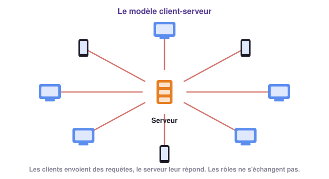
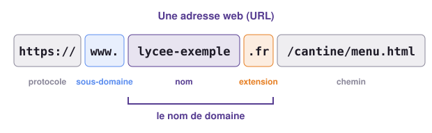
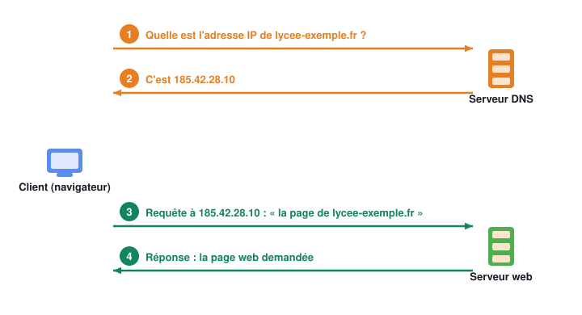
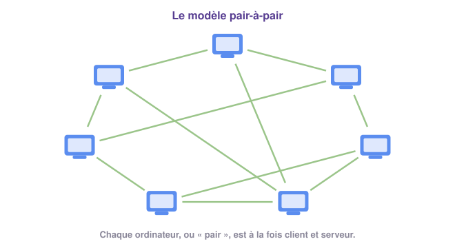
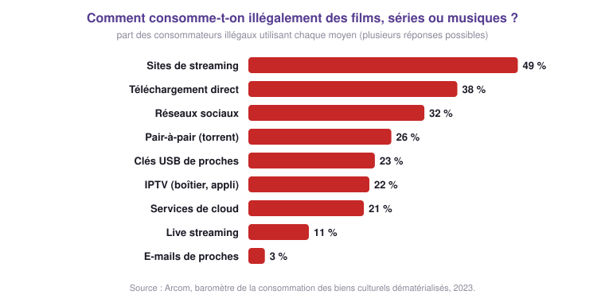
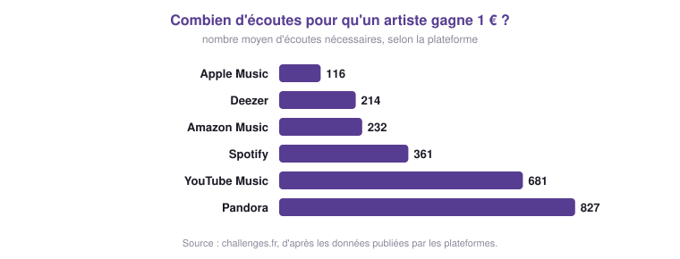

SNT · Thème Internet · Chapitre 2
Clients, serveurs, noms de domaine… et réseaux pair-à-pair
Introduction
Qui demande, qui répond ? Et quand tout le monde se connecte en même temps ?
Comment un nom comme wikipedia.org devient une adresse IP.
Quand chaque ordinateur devient aussi serveur.
Télécharger, partager… et respecter les créateurs.
🏛️ Le saviez-vous ?
Chaque seconde, Google reçoit environ 100 000 recherches, réparties entre des centaines de milliers de serveurs dans le monde entier.
SNT · Internet · Chapitre 2 — Plongée au cœur d'Internet
2
Introduction
Nejma a lu sur un réseau social :
⚠️ Sur un réseau social
« Si des pirates rendaient tous les serveurs DNS indisponibles, plus personne ne pourrait surfer sur le Web. »
Garde cette phrase en tête : nous y répondrons à la fin de la partie 2.
SNT · Internet · Chapitre 2 — Plongée au cœur d'Internet
3
1
Qui demande, qui répond ?
Activité 1
À vous de jouer !
Réponds sur ton cahier, sous forme de tableau.
Une machine demande un service, une autre le fournit. Où se trouve vraiment la vidéo que tu regardes ?
SNT · Internet · Chapitre 2 — Plongée au cœur d'Internet
5
Partie 1 · Clients et serveurs
📘 Définitions : Client et serveur

SNT · Internet · Chapitre 2 — Plongée au cœur d'Internet
6
⭐ À retenir !
Activité 2
À vous de jouer !
Chaque serveur du site de la billetterie peut traiter 500 visiteurs en même temps.
SNT · Internet · Chapitre 2 — Plongée au cœur d'Internet
8
Activité 2
SNT · Internet · Chapitre 2 — Plongée au cœur d'Internet
9
Partie 1 · Attaques
📘 Définition : Attaque par déni de service (DDoS)
Un pirate prend le contrôle d'un grand nombre de machines, souvent à l'insu de leurs propriétaires, et leur fait envoyer en même temps une avalanche de requêtes vers un même site. Le site, surchargé, devient inaccessible.
⚠️ C'est un délit
Entraver le fonctionnement d'un système informatique : jusqu'à 5 ans de prison et 150 000 € d'amende (article 323-2 du Code pénal).
SNT · Internet · Chapitre 2 — Plongée au cœur d'Internet
10
⭐ À retenir !
2
Le répertoire d'Internet
Activité 3
« As-tu vu le nouveau site web 133.125.232.127 ? »
« Non ! Et toi, tu as vu le site 3a01:cb1c:3cc:8100:b8dd:b019:a392:61b3 ? »
Hugo et Théo, dans un monde sans noms de domaine
SNT · Internet · Chapitre 2 — Plongée au cœur d'Internet
13
Partie 2 · Noms de domaine

📘 Définition : Nom de domaine
Une adresse composée de lettres, facile à retenir, qui désigne un site : lycee-exemple.fr, wikipedia.org. Elle se termine par une extension : .fr (un pays), .com (commercial), .org (non commercial), .gouv.fr (gouvernement)…
SNT · Internet · Chapitre 2 — Plongée au cœur d'Internet
14
Partie 2 · DNS
📘 Définition : Serveur DNS
Un serveur DNS (Domain Name System) fait la correspondance entre les noms de domaine et les adresses IP, comme le répertoire d'un téléphone entre les noms et les numéros.

SNT · Internet · Chapitre 2 — Plongée au cœur d'Internet
15
Activité 4
À vous de jouer !
Choisis un site, puis avance étape par étape.
lycee-exemple.fr : combien d'échanges avant la page ? Entre quelles machines ?lycee-exmple.fr : que se passe-t-il ?encyclopedie.org : comment le serveur DNS trouve-t-il la réponse ?SNT · Internet · Chapitre 2 — Plongée au cœur d'Internet
16
Activité 4
SNT · Internet · Chapitre 2 — Plongée au cœur d'Internet
17
⭐ À retenir !
Activité 5 · sur ordinateur
À vous de jouer !
La commande nslookup interroge un serveur DNS.
nslookup www.google.fr : relève les adresses. IPv4 ? IPv6 ?nslookup www.youtube.com : combien d'adresses ? Pourquoi ?nslookup 8.8.8.8 : quel nom correspond à cette adresse ?google.fr, google.com, google.de.SNT · Internet · Chapitre 2 — Plongée au cœur d'Internet
19
Vrai ou faux ?
⚠️ « Si tous les serveurs DNS tombaient, plus personne ne pourrait surfer sur le Web. »
En grande partie vrai. Les routeurs fonctionneraient toujours, et on pourrait en théorie taper les adresses IP… mais personne ne les connaît, et un serveur qui héberge plusieurs sites a besoin du nom.
C'est pourquoi les serveurs DNS sont très nombreux et répartis dans le monde entier.
SNT · Internet · Chapitre 2 — Plongée au cœur d'Internet
20
3
Quand chaque ordinateur devient aussi serveur
Activité 6
À vous de jouer !
À chaque tour, le serveur envoie 2 morceaux. En pair-à-pair, chaque ordinateur peut en plus envoyer un morceau qu'il possède.
SNT · Internet · Chapitre 2 — Plongée au cœur d'Internet
22
Activité 6
SNT · Internet · Chapitre 2 — Plongée au cœur d'Internet
23
Partie 3 · Pair-à-pair
📘 Définition : Modèle pair-à-pair
Le pair-à-pair (peer-to-peer, P2P) est un principe d'échange où chaque ordinateur est à la fois client et serveur : il reçoit des données des autres et leur en fournit.
Les fichiers sont découpés en morceaux : on peut partager un fichier avant même de l'avoir en entier.

SNT · Internet · Chapitre 2 — Plongée au cœur d'Internet
24
⭐ À retenir !
Partie 3 · Usages
Windows et de nombreux jeux distribuent leurs mises à jour en pair-à-pair, pour soulager leurs serveurs.
La blockchain du Bitcoin est copiée sur des milliers d'ordinateurs. Aucune banque ne la contrôle.
Le projet Décrypthon : 75 000 volontaires, un calcul qui aurait pris plus de 1 100 ans à un seul ordinateur.
Entre internautes… légal ou non, selon ce que l'on partage.
SNT · Internet · Chapitre 2 — Plongée au cœur d'Internet
26
4
Ce qui compte, c'est ce qu'on partage
Partie 4 · Droit d'auteur
📘 Définition : Droit d'auteur
Une œuvre (film, chanson, jeu vidéo, livre, logiciel…) appartient à son auteur. Le droit d'auteur lui permet de décider qui peut la copier, la diffuser, et à quel prix.
Utiliser un logiciel de pair-à-pair est légal. Télécharger ou partager une œuvre sans l'accord de son propriétaire est illégal, quel que soit le moyen.
SNT · Internet · Chapitre 2 — Plongée au cœur d'Internet
28
Activité 7
SNT · Internet · Chapitre 2 — Plongée au cœur d'Internet
29
Partie 4 · L'Arcom

📘 L'Arcom
Née en 2022 de la fusion du CSA et d'Hadopi, l'Arcom protège les œuvres en luttant contre les offres illégales et en encourageant les offres légales.
⚠️ Les sanctions
Un premier avertissement par e-mail, un second par courrier, puis la justice : jusqu'à 1 500 € d'amende.
SNT · Internet · Chapitre 2 — Plongée au cœur d'Internet
30
Partie 4 · Les créateurs

SNT · Internet · Chapitre 2 — Plongée au cœur d'Internet
31
Activité 8
À vous de jouer !
Elle consulte un juriste, le directeur de la plateforme de streaming, et demande une enquête à l'Arcom.
La chanteuse doit-elle porter plainte contre les internautes qui téléchargent illégalement sa musique ?
Choisis un rôle, prépare 2 ou 3 arguments avec les documents, puis improvisez la scène.
SNT · Internet · Chapitre 2 — Plongée au cœur d'Internet
32
⭐ À retenir !
Bilan
À vous de jouer !
Quatorze exercices, du plus simple au plus difficile. La correction est vérifiée avec le professeur.
SNT · Internet · Chapitre 2 — Plongée au cœur d'Internet
34
Bilan
À vous de jouer !
Un QCM de 12 questions, corrigé automatiquement.
SNT · Internet · Chapitre 2 — Plongée au cœur d'Internet
35
Bilan
SNT · Internet · Chapitre 2 — Plongée au cœur d'Internet
36
Pour réviser tout le thème
SNT · Internet · Chapitre 2 — Plongée au cœur d'Internet
37